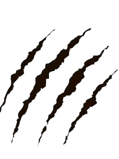
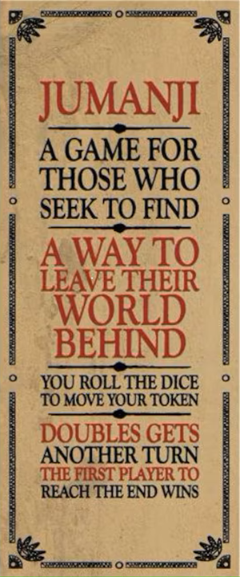
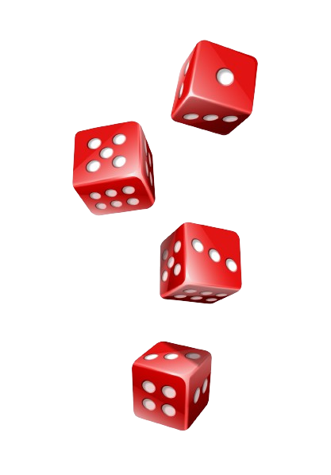

A game for those who seek to find a way to leave their world behind


Rules of Jumanji
Have each player pick one pawn and one rescue die and set up the board with the danger cards shuffled and facing down.
Roll the number die and move your pawn on your color pathway. If you land on a blank space, pull a danger card and read it under the decoder.
Flip the hourglass and wait for the other players to rescue you by rolling their rescue die.
All players need to roll either an hourglass symbol or the symbol from the danger card you pulled in order to save you.
If you're safe, you can keep your pawn in the same space, but if you aren't rescued, you need to move your pawn back to the number of spaces noted on your danger card.
If you land on a wait for five or eight spaces, then each player has to take a turn trying to rescue you by rolling either a five or eight on the die. If they don't, you move back a space. This continues until you are rescued, or move back far enough to reach the starting point.
If you land on a Jungle space, pull a danger card and read it under the decoder. Flip the timer and all players will need to roll their rescue die to match the symbol on the Jungle space in order to save themselves.

If all players roll the hourglass symbol or the card symbol, everyone is safe.
If not, add the danger card to the Doomsday Grid and continue pulling danger cards until everyone is safe.
Each player will need to roll the correct symbol or hourglass symbol to save everyone, or the above steps will need to be repeated.
A rhino can be placed in any rhino space. If you land on the space with the rhino, you are blocked until you roll an even number on your die, or until another player lands on the same space and moves the rhino.
If the Doomsday Grid fills up, all players have lost, and the game is over.
If you and another player both reach the center at the same time, the first player to yell "Jumanji" is the winner.